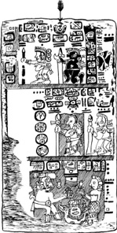
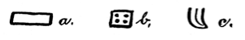
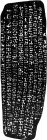
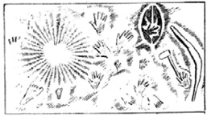

IV. BÖLÜM
KAYIP KITA BELGELERİ
Mu ülkesi hakkındaki kayıtlar sayısız ve çok çeşitli. Yazılı kayıtlar arasında bize insanın dünya üzerinde ortaya çıktığı yerin Mu ülkesi olduğunu söyleyenler var, örneğin Naacal Tabletleri. Başka kayıtlar bize kayıp kıtanın coğrafi konumu hakkında bilgi veriyor. Çok sayıda olan Amerikan yazılı kayıtları bize Mu ülkesinin Amerika’nın batısında bulunduğunu anlatıyor. Asya kayıtlarının tümü anayurt Mu’nun Asya’nın doğusunda, “doğan güneşin yönünde” olduğunu söylüyor. Dolayısıyla insanoğlunun anayurdu, Amerika ve Asya’nın arasında, yani Pasifik Okyanusu’nda yer alıyor ve adalarda onun ihtişamlı şehir ve tapınaklarının taş harabeleriyle birlikte beyaz bir ırk bulunuyor.
İlk önce Yucatan’da yazılmış antik bir Maya kitabı olan Troano Elyazması’ndan başlayarak, Amerikan kayıtlarını ele alacağım. Bu kitabın yaşının 1500 ile 5000 arasında olduğu

British Museum’un izniyle
Mu’nun yıkılışının öyküsünü anlatan Troano Elyazması.

Cortesianus Kodeksi-Ulusal Müze/Madrid
tahmin ediliyor. Bana kalırsa yaşı 1500 ile 3000 arası. Bunu yazı tarzına dayandırıyorum. Troano Elyazması’ndan burada sunacağım birçok alıntı Mu hakkındaki bu savımı kesin olarak kanıtlayacak:
1. Alıntı: “6 Kan yılı, 11 Muluc, Zac ayında, aralıksız olarak 13 Chuen’e kadar süren korkunç depremler oldu. Toprak tepelerin ülkesi -Mu diyarı- kurban edildi. Yeraltının alevleriyle aralıksız sarsılıp, iki kez kabararak, gece vakti yok oldu. Hapis kalmış bu alevler birçok yerde toprağın yükselip batmasına neden oldu. Sonunda zemin dayanamadı ve on kavim (veya kabile) parçalanıp dağıldı. 64 milyon insanla beraber, bu kitabın yazılmasından 8060 yıl önce batıp gittiler.”
Jeolojik açıdan “toprak tepelerin ülkesi” tanımı tamamen doğru ve Paskalya Adası’nda bulunan taş ocaklarından söz ediyor.
2. Alıntı: “Kutsal gizemlerin diyarı Mu, Batı Toprakları. Kui Diyarı, tanrıların anayurdu.”
1. Mu hiyeratik alfabesinin M harfinin bir formu, ayrıca Mu’nun alfabetik sembolü.
2. Hiyeratik alfabenin T harfinin bir formu. Sıklıkla belirtme sıfatı olarak kullanılırdı.
3. Batı Toprakları’nın evrensel coğrafi sembolü. Karakterlerin bir kalıp içinde bulunması geçmiş zaman anlamı veriyor, dolayısıyla “Mu, Batı Toprakları’ydı.”
1. O
2. Kui Toprakları veya Kui Diyarı.
3. Batı Toprakları
Batı Toprakları, Kui Diyarı’ydı.
Bu bölüm insanoğlunun anayurdundan bahseden bilinen en önemli parça, çünkü insanoğlunun anayurdunun coğrafi adının Batı Toprakları olduğunu belirtmekle kalmıyor, Troano Elyazması Amerika’da yazıldığı için, Batı Toprakları’nın Amerika’nın batısında olduğunu da ortaya koyuyor. İnsanoğlunun anayurdunun Amerika’nın batısında olduğu gerçeğini kanıtlayan birçok belge daha sunacağım.
“Kui Diyarı” ölenlerin ruhlarının gittiği yer anlamına geliyor. Mısır’daki Ka konsepti de Maya Kui’den geliyor. Antik
KODEKSİ CORTESIANUS
Cortesianus Kodeksi’nde yer alan kabartma bir baskı-UlusalMüze/Madrid
çağlarda “tanrı”, tek Tanrı anlamına gelmiyordu. Bir cins isim olan tanrı, ölen birinin ruhuna işaret ediyordu. Dolayısıyla elyazmasında geçen “tanrıların anayurdu” sözü, dolaylı olarak “insanoğlunun anayurdu” anlamına geliyor.
Büyük Mısır bilimci Sir Gardner Wilkinson, “Adetler ve Gelenekler” adlı kitabının 3. cildinin 70. sayfasında şöyle diyor:
“Maya diline göre Kui-Diyarı veya Kui Ülkesi, tanrıların -ve insanın- anası olan Tanrıça Maya’nın doğum yeriydi.”
Bu arada, 2. alıntıya Mısır Ölüler Kitabı’nda da birçok kez değiniliyor.
CODEX CORTESİANUS
Codex Cortesianus, bağnaz piskopos Landa’nın gözünden kaçan eski Maya kitaplarından biri. Bu kitap günümüzde Madrid Ulusal Müzesi’nde bulunuyor. İçindeki karakterler, figürler ve yazılar Troano Elyazması ile yaklaşık aynı zamana ait olduğunu gösteriyor. Fakat Codex Cortesianus’un dili Troano Elyazması’na kıyasla çok daha sembolik. Kitapta konumuzla ilgili bazı bölümler:
“Güçlü koluyla Homen, toprağın günbatımından sonra sarsılmasına sebep oldu ve gece vakti Mu, toprak tepelerin ülkesi sulara gömüldü.”
“Mu, havuzun (denizlerin) hayatı, gece vakti Homen tarafından sulara gömüldü.”
“Ölü hükümdarın yeri artık cansız ve hareketsiz; derinlerin kralı büyük bir güçle yüzeye çıkarken onu iki kez, yukarı ve aşağı sarsıp temelinden savurduktan sonra sulara gömdü.”
“Mu iki kez temelinden savruldu, daha sonra da ateşlerle kurban edildi. Depremler yüzünden şiddetle yukarı aşağı sarsılırken parçalandı. Her şeyin bir solucan yığını gibi hareket etmesine neden olan büyücü, onu tekmeleyerek o gece kurban etti.”
Codex Cortesianus ve Troano Elyazması’nın aynı tapınak belgelerinden yazıldığı ortada. Codex Cortesianus ülkeyi yalnızca hiyeratik adıyla anarken, Troano Elyazması bize ülkenin hem hiyeratik hem coğrafi adını söylüyor.
LHASA BELGESİ
Bu belge Schliemann tarafından Lhasa, Tibet’teki eski Budist Tapınağı’nda bulundu. Schliemann belgeyi deşifre ve tercüme etti. Bu belgenin, Troano Elyazması ve Codex Cortesianus ile aynı kaynaktan gelmediği açık. Belge daha yeni ve Maya karakterleriyle yazılmamış.
Lhasa Belgesi’nden ilgi çekici bir bölüm: “Bal’ın yıldızı, şimdi yalnızca göğün ve denizin olduğu yere düştüğünde, altın kapıları ve saydam saraylarıyla yedi şehir fırtınadaki yapraklar gibi titreyip sarsıldı ve saraylardan bir ateş ve duman seli yükseldi. İnsanların feryat ve çığlıkları göğü sardı. Tapınak ve sığınaklarına koştular ve bilge Mu -Başrahip Ra Mu- ayağa kalkıp onlara seslendi: ‘Tüm bunların olacağını öngörmemiş miydim?’ Ve parlak kıyafetleri ve değerli taşlarıyla kadınlar ve erkekler haykırdılar: ‘Mu, kurtar bizi!’ Mu yanıtladı: Hizmetkarlarınız ve servetlerinizle beraber öleceksiniz, sizin küllerinizden yeni uluslar doğacak. Eğer üstünlüklerinin, giyinip kuşandıklarından değil ürettiklerinden kaynaklandığını unuturlarsa, onlar da aynı akıbete uğrayacaklar. Ateş ve duman Mu’nun sözlerini boğdu. Toprak ve üzerinde yaşayanlar parçalara ayrılarak derinlikler tarafından yutuldu.”
Bal, “Tarlaların Efendisi” anlamına gelen bir Maya sözcüğü. “Saydam tapınaklar” şüphesiz bir yanlış tercüme örneği. Tapınaklar cam veya benzeri saydam bir malzemeden oluşmuyordu. Bunlar açık veya çatısız tapınaklardı ve günümüzün Pers tapınakları gibi, içeride dua edip yakaranların başlarına Ra’nın -güneşin- ışığının ulaşmasına izin verecek şekilde inşa edilmişlerdi.
La Plongeon, Yucatan’da “Mu Diyarı’nın Başrahibi’nin, ülkenin yıkımına dair kehanette bulunduğunu ve kehanete kulak veren bazılarının ülkeden ayrılarak kolonilere gidip felaketten sağ kurtulduklarını” anlatan kayıtlar buldu.
Le Plongeon, Schliemann Lhasa Belgesi’ni yayımlamadan yıllar önce ölmüştü.
Xochialco Piramidi
UXMAL TAPINAĞI
Bu tapınak Yucatan, Uxmal’da bulunuyor ve Le Plongeon tarafından “Kutsal Gizemler Tapınağı” olarak adlandırıldı. Duvarlarındaki önemli yazıtta şu sözler yer alıyor: “Bu mabet Batı Toprakları -Kui Diyarı- kutsal gizemlerimizin doğum yeri olan Mu’nun hatırasına adanmış bir anıttır.”
Tapınak, bir zamanlar anayurdun bulunduğu batıya bakacak şekilde inşa edilmiş. Bu yazıt Troano Elyazması’nın ikinci bölümünü en ince detayına kadar yineliyor ve anayurdun Amerika’nın batısında yer aldığını anlatan diğer belgeleri da kanıtlıyor. Dahası ve en önemlisi, bize bu tapınağın dini öğretilerinin de oradan geldiğini söylüyor. Dolayısıyla burada bulduğumuz her şeyin kaynağının Batı Toprakları, Mu olduğunu anlıyoruz. Bu bilginin ışığında Mısır dini ve biliminin izini sürebiliriz ve kökenini ortaya çıkarabiliriz.
XOCHILAO PİRAMİDİ
Mexico City’nin 60 mil güneybatısında yer alan bu piramit, Mısır piramitlerinin tümünden binlerce yıl önceye dayanıyor. Yandaki fotoğraf, iki kısımdan oluşan bir resim tablet formundaki yazıt görülüyor. Üstteki kısım -veya Pervaz?- Mu’nun, yani Batı Toprakları’nın yıkımının nasıl gerçekleştiği, bu yıkımda etkisi olan güçler ve bu güçlerin kökenleriyle ilgili.
Yazıtın bu kısmının büyük bölümü taşların düşmesiyle kaybolmuş ve geriye kalanların bir kısmı da okunmayacak kadar yıpranmış ve kırık; bu sebeple üzerinde yazanları birebir anlatmaya çalışmak yerine önemine değineceğim. Yazıtın alt veya ana kısmı okunabilecek kadar iyi durumda olsa da parçalarının çoğu detayların tümünü anlamak için fazla yıpranmış. Yine de detayların çoğu eksik de olsa, genel bir anlam çıkarmamız mümkün.
1. Kısım: Pervaz
1. Kısım: Pervaz. 1. Anayurt Mu’nun hiyeratik alfabesinin M harfi olan dikdörtgen. Kenarındaki iki dantel, Mu ile birlikte Batı Toprakları’nı oluşturan iki adayı temsil ediyor.
2. Mu’nun içinde ve altında işleyerek onu parçalara ayıran volkanik güçler.
3. Maya “Tian Chihans” sembolü, doğrudan Sonsuz’dan gelen ve onun “emirleri”, “arzuları”, “buyrukları” olan Dört Büyük Temel Kuvvet’in temsilcisi.
4. Bir ok başı veya mızrak ucu, güçlerin etkin olduğunu anlatıyor. Mızrak başını ikiye ayıran çizgi bunun Temel Kuvvetlerden biri değil de onlardan gelen ikincil bir güç olduğunu gösteriyor.
5. Bu bileşik bir sembol ve şu şekilde parçalara ayrılabilir:
a. Mu’nun sembolü olan dikdörtgen.
b. Onu taşıyan dört sütun.
c. Kuvvetler sütunların çökmesine neden olmuş ve Mu dibe çekiliyor.
6. Bir insan figürü, insanların da kıtayla beraber battıklarını anlatıyor.

2. Kısım: Batış. 1a. Klasik bir yılan figürü, büyük suların sembolü. Uçurumu temsil eden hiyeratik U harfinin şeklinde kıvrılmış, bir deniz dibi uçurumu.
2. Kısım: Batış;
1b. Yılanın gözleri kapalı. Kapalı hâliyle gözler uykuyu ve dinlenmeyi temsil ediyor. Sular dinleniyor, kendi seviyelerine çekilmişler.
2. Üç sayısı, Mu’nun rakamsal sembolü.
3. Batı Toprakları’nı temsil eden sembollerden biri. Yüzeyin altında görünen 2. ve 3. kısımlar Mu’nun -Batı Toprakları’nın- dibe gömüldüğünü anlatıyor.
4. Kertenkelenin kuyruğu, yani sular, içeri ve aşağıya doğru kıvrılıp bir insan figürü sararak halkın da ülkeleriyle beraber battıklarını söylüyor. Bu resimde başka detaylar da var, fakat bir anlam çıkarma girişimini boşa çıkaracak kadar yıpranmış durumdalar.
Yukarıda bahsedilenlere piramitteki başka yazıtları ilave ederek açıklamasını vereceğim.
Açıklama: Piramit insanoğlunun anayurdu, Batı Toprakları Mu’nun üzerinde yaşayanlarla beraber yok oluşunun hatırası
nı yaşatacak bir anıt olarak dikildi. Onu taşıyan sütunlar büyük güçlerin saldırısına uğradı ve yıkıldı; Mu ve tüm halkı bir uçuruma gömüldü.
Eflatun Timeus’da, bu Meksika piramidinin, Poseidon Tapınağı’nın inşa edildiği Atlantis’teki Kutsal Tepe’nin eksiksiz bir örneği olduğunu söylüyor. Eflatun M.Ö. 400’de yaşadı ve buna rağmen bize Amerika’yı Kolomb’un keşfettiği öğretiliyor!
Akab-Dzib: Chichen Itza şehrinde, Akab-Dzib adıyla anılan binanın güney ucunda bulunan iç bölmenin kapısının üst pervazını oluşturan taştan bir levha var. Burada bulduğumuz şey ise “korkunç, kasvetli hikâye.” Bu taş levha, Batı Toprakları’nın depremlerle temeline kadar sarsılıp sonra da yutulmasını anlatıyor.
Maya İnanışları: Yucatan Mayaları, Codex Cortesianus’ta görüldüğü üzere, Batı’yı “karanlık bölge, ölülerin ruhlarının atalarının bağrına döndüğü yer.” olarak tanımlıyor.
Valmiki, “Ramayana,” I. Cilt, sayfa 342: “Maya din adamları, Naacaller, doğudaki anavatanlarından yola çıkıp, din ve bilim misyonerleri olarak önce Burma’ya gidip burada Nagaları eğittiler. Burma’dan Hindistan’daki Deccan’a giderek, dinlerini ve öğretilerini Babil’e ve Mısır’a taşıdılar.”
Burma: Angkor Thom, Kamboçya’da arkeologların “aslan” olarak adlandırdığı alışıldık yaratık figürleri görülebilir. Tümü doğuya, bir zamanlar anayurdun bulunduğu yere bakacak şekilde yerleştirilmiş. Bu figürlerin kayıp kıtayla ilgili olduklarına şüphe yok, çünkü “Mu” diyorlar. Bu, Mu hiyeratik alfabesinin M harfine karşılık gelen ve onun sembollerinden biri olan dikdörtgen şeklindeki ağızlarından anlaşılabilir.
Plutarkhos-Solon’un Hayatı: “Sais başrahibi Souchis, Solon’a (M.Ö. 600), ayrıca Heliopolisli bir rahip olan Psenophis’e, 9000 yıl önce Mısırlıların Batı Toprakları halkıyla ilişkilerinin, aradaki ülkenin doğal afetlerle yıkıma uğrayışı ve Atlantis’in depremlerle sulara gömülerek yok oluşundan beri denizi geçilmez kılan çamur nedeniyle kesintiye uğradığını söylüyor.”
Burada Batı Toprakları’nın Amerika’nın batısında bulunduğu tartışmasız biçimde ortaya koyuluyor, zira uğradığı felaketler yüzünden geçit vermez bir hâle gelerek Batı Toprakları’na yolculuğu imkânsız kılan “aradaki ülkeler” Amerika’ydı.
Bir kez daha ne Atlantis’in ne de aradaki ülkenin Batı Toprakları olmadığı, ayrıca Atlantis’in de aradaki ülke olmadığı kanıtlanıyor; zira aradaki ülke yalnızca aşılmaz bir hâle gelmişken, Atlantis sulara gömülmüştü.
Bu aşamadan sonra Güney Denizi Adaları’nın incelemesini yapacak ve üzerlerinde bulunan taştan kalıntılardan, ayrıca bu bölgenin yabani ve yarı yabani halkı arasında bulunan sıra dışı ve hayret verici efsanelerden bahsedeceğim.
Amerika’dan Pasifik Okyanusu’na gitmek için batıya yol almamız gerekir. Okuyucunun da bildiği üzere Pasifik Okyanusu’nda bulunduğumuzda, Yucatan’ın batısında yer alıyoruz. Okuyucu bu noktayı göz önünde bulundurmak suretiyle bu aşamadan sonra gösterilecek kayıtların önemini anlayabilir.
Polinezya ve diğer takımadaları oluşturan toprak kırıntıları arasında, tarih öncesi zamanlarda Amerika uygarlığını Güney ve Doğu Asya uygarlıklarıyla, nihayetinde de diğer birçok dünya medeniyetleriyle bir araya getiren bağlantılar bulacağız. Yolculuk uzun olsa da ilgi çekici ve hayret veren sürpriz-
James Churchward tarafından çizilmiştir.
Güney Denizi Adaları’ndaki tarih öncesi taş kalıntıların dağılımı
lerle dolu olacak. Antik bir medeniyetin kalıntılarını aradığımız ve bulduğumuz yerler, bir insanın hatırlayacağı kadar kısa bir süre önce vahşi yamyamların barındığı, bazıları hâlâ yamyamlara ait adalar olacak. Yine de bu yamyamlar, daha önce göstermiş olduğum gibi, oldukça uygar insanların soyundan geliyorlar. Yabaniler ve yarı yabanilerden oluşan günümüz Polinezyalılarının ataları bir zamanlar dünya medeniyetinin merkezini oluşturuyorlardı.
Valmiki, Ramayana, I. Cilt, sayfa 353: “Mayalar, güneşin daha ufkun üzerine yükselmediği uzak çağlarda, gemileri batı okyanuslarından doğu okyanuslarına, güney denizlerinden kuzey denizlerine yol alan kudretli denizcilerdi. Aynı şekilde, tecrübeli mimarlar olduklarından büyük şehirler ve saraylar inşa ettiler.”
Pasifik Adaları’ndaki Büyük Taş Harabeler: Pasifik Okyanusu boyunca enine ve boyuna uzanmış dağınık, küçük ada grupları bulunur. Bunların birçoğunda büyük bir medeniyetin kalıntıları göze çarpıyor. Büyük taş tapınaklar, devasa taş duvarlar, taşlarla çevrili kanallar, taş döşeli yollar, büyük dikili taşlar ve heykeller; yani kıtasal kaynaklar ve yetenekli işçiler gerektiren eserler bulunuyor. Yine de şimdi bunlara büyük bir kıtanın üzerinde değil yabani ve yarı yabani insanların yaşadığı toprak kırıntılarında rastlıyoruz.
Bu büyük yıkıntılar, çağlar önce var olmuş ve hakkında hiçbir şey bilmediğimiz büyük bir medeniyetin eserleri olmalarıyla sıradan insanların da bilim insanlarının da ilgisini çekiyor. Bu kalıntılar o kadar çok sayıda ve dağınık durumda ki, tümünü sayma ve tanımlama işinin ucu bucağı görünmüyor. Hepsini tasvir edebilmem için birkaç sayfa değil ciltler gerekirdi. Bu sebeple uzun ve detaylı bir araştırma gerektiren bu eserlere yalnızca kısaca değinmekle yetineceğim. Kullanacağım tasvirler teknikten ziyade kolay anlaşılır olacak.
Kaşifin göz önüne alması gereken diğer bir zorluk da büyük harabelerin yanına yaklaşmalarına mani olan batıl bir korkuya sahip ilkel yerlilerdir. Bu yerlerin mauli adını verdikleri hayaletlere ve kötü ruhlara ev sahipliği yaptığına inandıklarından, onlardan sizi yıkıntılara götürmelerini istemek, hatta bunların nerede bulunduklarını öğrenmek bile neredeyse imkânsız. Öte yandan, konumlarını öğrenmenin iyi bir yolu bir yerlinin size adayı göstermesini izlemek, fakat kendi yolunuzda giderek onu takip etmemektir. Sadece en kısa yolları bulmak için onu yanınıza alın. Bir yıkıntıya yaklaşıyorsanız aksi yönde gitmenizi isteyecek, eğer yola devam etmekte ısrarcı olursanız harabeye yaklaştığınızda kaçacak ve sizi yalnız bırakacaktır. Böylece hedefinize ulaştığınızı anlamış olacaksınız. Başlangıcı Paskalya Adası kalıntılarıyla yapacağım. Bunlar, diğerlerinin çoğundan daha iyi biliniyor.
PASKALYA ADASI
Paskalya Adası, Polinezya’nın güneydoğu ucunda, Güney Amerika kıyısından 2100 mil uzakta bulunuyor. En uzun kısmı 13 mil, en geniş kısmı ise 7 mil. Bu küçük adada, günümüzde, toplamda 555 adet oyma taş, devasa heykel ve büyük bir tarih öncesi medeniyetin sanatına ait başka örnekler bulunuyor.
Paskalya Adası bulguları üzerindeki en büyük otorite olduğuna inandığım W. J. Thomson, şöyle diyor:
“En büyük figür bitmemiş hâlde taş ocaklarından birinde bulunuyor ve boyu 70 feet (1 feet 30.48 santimetredir); en küçük olan ise bir mağarada bulundu ve boyu yaklaşık 3 feet idi. Çoğunluğunun boyu 15-18 feet arasında. Bu figürlerin önemli kişilikleri temsil ettiğine ve bu kişilerin anısına hazırlanmış birer anıt oldukları düşünülüyor.”
Bu yüksek kayaların tepelerinde, uzaktan bakıldığında kızıl görünen devasa küreler yer alıyor. Bunların birçoğu şimdi sessiz yatan yanardağların yamaçlarını oluşturan doğal, kızıl kayalardan kesilmiş. Bu kürelerden, kızıl kum taşından kazınmış olan birinin çapı 12 feet. Bu küre Terrai Tepeleri’ndeki taş ocağında yer alıyor. Paskalya Adası’nda heykeller dışında kesilmiş ve işlenmiş taşlardan oluşan birçok devasa platform benzeri yığın bulunuyor. Bu yığınlar yaklaşık 30 feet yüksekliğinde ve uzunlukları da 200-300 feet arasında değişiyor. Kıtanın başka bir kısmına nakledilip, tapınak ve saray inşaatında kullanılmayı bekliyorlar.
Sönmüş yanardağlar Rana Roraka ve Rana Rao’nun yakınlarında bir zamanlar büyük taştan bir tapınak olan bir harabe bulunuyor. Düşmüş taşlar, 100 feet uzunluğunda ve 20 feet genişliğinde bir yapının dış hatlarını meydana çıkarıyor. 5 feet yüksekliğinde ve 5 feet kalınlığında duvarlar hâlâ ayakta. Bu yapının bazı taşlarının üzerinde insanoğlunun ilk dininin kutsal sembolleri olan figürler kazınmış durumda.
W. J. Thomson: “Varlığını sürdüren 7 kadar tablet mevcut; bunlar Paskalya Adası’nın yazılı hikâyesini taşıyan sayısız tabletten geriye kalanlar.”
Thomson, adada bu tabletlerdeki oymaların anlamını bilen tek kişi olan yaşlı bir yerlinin yardımıyla tabletlerden bazılarını deşifre ve tercüme etti. İşte Thomson’un tercümelerinden ikisi:
Tablet 1: “Bu ada ilk yaratıldığı ve atalarımızca bilindiği zaman, toprak düz taşlarla döşenmiş yollarla bölünüyordu. Bu taşlar o kadar düzgün dizilmişti ki kenarlarında hiçbir çıkıntı bulunmuyordu. Kahve [tercüme hatası] ağaçları yolların kenarlarında yan yana büyüyordu. Tepede birleşiyorlar ve dalları kaslar gibi birbirlerine bağlanıyordu. Yolların mimarı Heke idi ve yolların her yöne dallandığı şerefli konumda ikamet eden de oydu.”
“O mutlu diyarda, Romaha’nın eskiden sevgili Hangarva’sı ile beraber yaşadığı diyarda...”
“Turaki kuşların sesini dinler ve onları beslerdi.”
“O güzel diyarda, soğuk olduğunda suda yaşayan Cennet’ten tanrılar hüküm sürerlerdi.”
“Orada siyah ve beyaz benekli örümcek Cennet’e yükselmek ister, fakat acı soğuk tarafından engellenirdi.”
Bu yolların kalıntıları Paskalya Adası’nda ve diğer birçok Güney Denizi Adası’nda görülebilir.
Tablet 2, “Yüce Kral” başlıklı: “Nedir Yüce Kral’ın toprak üzerindeki kudreti? O bitkileri büyütecek ve gökyüzünün rengini değiştirecek kudrettedir.”
“Herkes selamlasın bizi genç bitkilere karşı müşfik kılan, gökyüzünün farklı renklerine hayran bırakan ve yükselen bulutlara şahitlik ettiren Yüce Kral’ın kudretini.”
“Herkes selamlasın parlak yıldızların, alçalan bulutların, yumuşak çiğin, düşen yağmurun ve güneş ile ayın ışıklarının lütuflarının kıymetini bilmemizi sağlayan Yüce Kral’ın kudretini.”
“Nedir Yüce Kral’ın toprak üzerindeki kudreti?”
“O, dünyayı yaşamla dolduracak, hem kralları hem tebaalarını yaratacak kudrettedir.”
“Herkes selamlasın insanları yaratan, krallara hükümdarlıklarını veren ve sadık tebaalarını yaratan Yüce Kral’ın kudretini.”
“Nedir Yüce Kral’ın kudreti?”
“O, ıstakozları, ringa yavrularını, yılan balıklarını, maymunbalıklarının ve denizdeki her şeyi yaratacak kudrettedir.”
“Nedir Yüce Kral’ın denizler üzerindeki kudreti?”
“O, derin sularda yüzen güçlü balıkları yaratacak kudrettedir.”
“Herkes selamlasın kurtçukların, sineklerin, solucanların, pirelerin ve her türden haşerenin saldırılarına direnmemizi sağlayan Yüce Kral’ın kudretini.”
Bir efsane şunu anlatır:
“Bu ufak ada bir zamanlar üzerinden güzelce işlenmiş, yassı kayalarla döşenmiş birçok yolun geçen büyük bir kıtanın parçasıydı. Yollar, gri ve siyah benekli örümceğin ağının tasarımını temsil edecek şekilde, kurnazlıkla inşa edilmişti; kimse bu yolların başlangıcını veya sonunu bulamazdı.”
W. J. Thomson: “Adanın güney ucunda, bazılarında yapının arka duvarını oluşturan bir kaya ve toprak setine bitişik ve düzenli bir sıra hâlinde inşa edilmiş, sayıları 80-100 arası değişen taştan ev bulunuyor. Bu tuhaf evlerin duvarlarının kalınlığı ortalama 5 feet ve yüksekliği de 4 (?) feet geliyor. Genişlikleri 4 (?) feet, uzunluklarıysa 13 feet. Kapı boşlukları, 20 inçten (1 inç 2.54 santimetredir) yüksek ve 19 inçten geniş olmayan ölçüleriyle oldukça küçük. Duvarlar düzensiz taş katmanlarından oluşuyor. Bunlar çoğunlukla kırmızı, beyaz ve
Paskalya Adası’ndaki heykeller

Paskalya Adası’nda bulunan bir tablet.
siyaha boyanmış ve üzerlerinde kuşlar, yüzler ve figürler bulunuyor. Evlerin yakınlarında, deniz kenarındaki yamaçlarda kayalar garip şekillerde yontulmuş; şekilleri insan yüzlerini, kaplumbağaları, kuşları, balıkları ve mitolojik hayvanları andırıyor.”
Paskalya Adası’nın hikâyesi, beyaz adam tarafından keşfinden bu yana, uzun bir trajedi sahnesini oluşturuyor.
Paskalya Adası’ndaki evlerde bulunan resimli levhalar
COOK GRUBU
Cook Takım Adaları, Hawaii’nin 40 derece kadar doğusunda bulunuyor. Ayrıca yaklaşık olarak Tahiti ve Fiji’nin ortasında, fakat düz bir çizginin üzerinde değil, güneyinde yer alıyorlar. Bu takım adalar arasından iki tanesinden söz edeceğim.
RARATONGA ADASI
Bu ada üzerinde Paskalya Adası tabletinde ve efsanelerinde sözü edilen yolun ufak bir kısmı yer alıyor.
MANGAIA ADASI
Cook Grubu’nun en güneyinde yer alan bu adanın büyüklüğü Paskalya Adası’nın yaklaşık yarısı kadardır. Üzerinde, Paskalya Adası’ndakine benzer kalıntılar bulunuyor. Adada taş ocağı veya kalıntıların burada işlendiğine dair bir kanıt bulunmadığı için kalıntıların buraya taşındığı sonucuna varılabilir.
TONGA-TABU
Tonga-tabu, Tonga grubuna ait bir mercan adası. Üzerinde en ufak bir doğal taş parçası bulunmuyor. İşte bu mercan adasında kemer şeklinde, kayadan yapılmış devasa bir anıt buluyoruz. Bu anıt her biri yaklaşık 70 ton gelen iki büyük ayak ve üstlerindeki, bunları birbirine bağlayan yaklaşık 25 tonluk başka bir kayadan meydana geliyor. Adada yerel taş olmayışı ve en yakın taş kaynağının 200 milden daha uzakta oluşu; eskilerin ne tür gemilerle böyle korkunç ağırlıkları taşıdıkları, bunları nasıl gemilerden indirdikleri ve güvenle karaya çıkardıktan sonra hangi aletlerle şimdi bulduğumuz hâlde bir araya getirdikleri gibi birçok soruya zemin hazırlıyor.
GILBERT VE MARSHALL GRUPLARI
Bu iki grubu oluşturan adalardan bazılarında taştan yapılmış yüksek, ince piramitler bulunuyor. Yerliler, anayurdun kutsal sembollerini, tasarımlarını nasıl elde ettiklerini veya ne anlama geldiklerini bilmeden süs olarak kullanıyorlar. Arorai Adaları’ndan dikkat çekici bir süs eşyasını, Prenses Arawali’nin Mu kraliyet armasını taşıyan yelpazesini göstermiştim.
CAROLINE GRUBU
Tarih öncesi kalıntılar söz konusu olduğunda Pasifik Okyanusu’nun hiçbir yerinde Caroline Adaları kadar hayret verici harabeler bulunamaz. Daha da ilginç olanı, bu adaların (Burma’dan) “doğan güneşe doğru bir ayın yolculuğu” mesafede yer almaları ve Naacal Tabletleri ile Valmiki’ye göre insanoğlunun anayurdunun bulunduğu ve Burma ile Hindistan’a varan ilk yerleşimcilerin yola çıktıkları noktada olmaları.
PANAPE
Panape’de, Güney Denizi Adaları’nda bulunanlar arasında en önemlisi olduğuna inandığım harabe yer alıyor. Bu, büyük bir tapınağın yıkıntılarından oluşuyor; 300 feet uzunluğa ve 60 feet genişliğe sahip, (1874 yılında) hâlâ ayakta duran duvarlar 30 feet yükseklikte ve toprak hizasında kalınlıkları 5 feet. Duvarlarda, anayurdun kutsal sembollerinden birçoğunun oymalarının kalıntıları bulunuyor. Bu tapınak kanallar ve setlerle bağlanmış ve mahzenlere, geçitlere ve platformlara sahip. Tümü bazalttan yapılmış. Büyük kare avlunun kaldırımlarının aşağısında, karşılıklı kenarlarda, her biri yaklaşık 10 feet karelik iki geçit veya giriş yer alıyor. Bunlar dış duvarda,

Tonga-Tabu’dan bir taş kemer
kanala kadar uzanan geçit yolları tarafından kesiliyorlar. Büyük avluda şüphesiz bu kutsal yerin en kutsal bölümü olan merkezi bir piramit odası bulunuyor.
Yerlilere göre birçok nesil önce bu tapınak bir süreliğine karaya oturmuş bir İspanyol korsan gemisinin mürettebatına ev sahipliği yapmış. Bu kanun kaçaklarından hatıralar, geçmişte depo olarak kullandıkları mahzenlerden birinde hâlâ bulunuyor. Yerlileri bu harabenin yakınlarına gitmeye ikna etmek mümkün değil; onlar bu mekânın “mauli” adını verdikleri hayaletlere ve kötü ruhlara ev sahipliği yaptığını söylüyorlar.
Panape’de başka harabeler de bulunuyor. Bazıları deniz kıyısında, diğerleri höyüklerin ve tepelerin üzerinde veya adanın merkezindeki açık alanlarda bulunsa da tümü okyanusu gören bir manzaraya sahip. Bu açık alanlardan birinde, 2-3 hektar arası yer kaplayan, kaya yığınlarından meydana gelmiş bir harabe, bir tür plato üzerinde konuşlanmış hâlde bulunuyor. Görünüşe bakılırsa etrafında bir tür kanal veya hendek mevcut. Dört ana yönü gösteren köşelerde harabeler yüksek höyükler hâlini alarak, yayılışlarıyla binanın bir zamanlar kare şeklinde olduğunu işaret ediyor.
Anladığım kadarıyla Panape’deki harabeler anayurdun büyük şehirlerinden, Yedi Kutsal Şehir’den birinin yıkıntıları. Bu şehrin nüfusunu kestirmek imkânsız, fakat oldukça büyük -en az yüz bin- olmalı.
SWALLOW ADASI
Panape’nin 12 derece doğusundadır. Bu ufak adada, yapısal açıdan Guam ve Tinian’da bulunanlara benzeyen bir piramit yer alıyor. Adanın batısında içinde birkaç höyük bulunan, taştan duvarlarla çevrilmiş, oldukça geniş, dörtgen bir alan bulunuyor. Eğer gübre ve topraktan oluşmuş kaplamalar kaldırılsa muhtemelen bir tür mabet bulunacak.
KUSAI ADASI
Takımada zincirinin güneydoğu ucu. Bu adada ve çevresindeki adalarda Panape’deki harabelere benzeyen, fakat onlar kadar yaygın olmayan harabeler bulunuyor. Bu adanın limanının güney kısmında taşlarla çevrelenmiş birkaç kanal var. Bu kanallar birbirlerini dik açıyla kesiyor. Kesişme noktaları arasında bir zamanlar üzerlerinde binalar bulunan yapay adalar mevcut. Hâlâ ayakta duran bir kule 35 feet yükseklikte. Bu adanın yerel hikâyeleri şöyle:
“Bir zamanlar burada yaşayan halk çok güçlüydü. Çok uzaklara, doğu ve batıya doğru birçok ay süren yolculuklara çıktıkları geniş taşıtları vardı.” Bu sözler, “Mayalar, gemileri doğu okyanuslarından batıdakilere, güney denizlerinden kuzeydekilere yol alan kudretli denizcilerdi.” diyen Valmiki’nin sözleriyle örtüşmüyor mu?
LELE ADASI
Kusai Adası’ndan dar bir kanalla ayrılıyor. Bu adada 18-20 feet yükseklikte ve muazzam kalınlıkta bir duvarla çevrelenmiş koni şeklinde bir tepe bulunuyor. Adanın geneli, etrafı çevrili devasa alanlar ve büyük duvar sıraları sunuyor. Bu etrafı çevrili alanların bazıları kenarları 200 feete 100 feet olan paralel kenarlar şeklinde. Uzunluğu 300-400 feet arası, genişliği 150 feet olan çok büyük bir örnek de mevcut. Duvarlar genellikle 12 feet kalınlığında ve içlerinde mahzenler, yapay mağaralar ve gizli geçitler yer alıyor.
Caroline Takımadaları’nın bu ucundaki yerliler, 1874 yılında beyaz adama karşı aşırı derecede saldırganlık gösteren yamyamlardı. Muhtemelen o zamandan bu yana biraz olsun uygarlaşmışlardır.
KINGSMILL ADALARI
Bu takımadalardan biri olan Tapiteau Adası’nda Gilbert ve Marshall Takımadaları’nda bulunanlara benzer, taştan, yüksek ve ince piramitler mevcut.
NAVIGATOR ADALARI
Bu adalarda büyük taştan binalar yer alıyor. Adalardan birindeki 1500 feetlik bir tepenin zirvesinde ve 500 feeti aşan bir yüksekliğe sahip bir uçurumun yanında dikkate değer bir yapı mevcut. Bu yapı yerel taştan dev bloklarla inşa edilmiş bir platform. Çapı 150, yüksekliği 20 feet. Bu yapının bir yanında uçurum, diğer yanındaysa geçmişte 18 ile 20 feet derinliğe sahip olabilecek bir hendek bulunuyor.
LADRONE (MARIANA) GRUBU
Bu adalardaki kalıntılar kendilerine özgü bir karaktere sahip. Çoğunlukla yekpare taştan, tepesi düz, piramit şekilli sü-
Tagaarın Evleri, Tinian Adası-Mariana Takımadaları
Latte, Hinapsan Adası-Mariana Takımadaları
tunlardan oluşuyorlar; yarımküre şeklindeki taştan başlıkları dahil yükseklikleri 20 feet, taban alanlarıysa 10 feet kare. Bazılarının tepesinde taştan bir yarımküre bulunuyor, diğerlerinin durumunda ise bu taşlar sismik bir aktivite sonucu bulundukları yerden silkelenmiş gibi yerde yatıyor. Tinian Adası’nda bunlar sütunlar hâlinde dizilmiş.
Larrin Tarr Gill’in makalesinden alıntı: “Üçü, tasa’ları hâlâ sağlam kalacak biçimde devrilmiş; üçü tamamen parçalanmış ve iki tanesinin başlığı toprağın şiddetli bir sarsıntısıyla desteklerinden koparılmış gibi yatıyor. Tepesi düz piramit şekilli ve yarımküre taştan başlıklara sahip bu sütunların çevreleri tabanda 18 feet uzunlukta. Sütunların yüksekliği 11 feet, en üstte incelen çevreleri 15 feet’ten biraz uzun ve tepelerindeki başlıklar 5 feet yüksekliğe ve 6 feet kalınlığa sahip. Pürüzlü, sert tortul kayalardan yapılmış her sütunun ağırlığı 30 tona yakın; ilk hallerinde birbirlerinden 7 metre aralıkla yerleştirilmiş, iki paralel sıra sütundan oluşan yol 54 feet uzunluğa ve 10 feet genişliğe sahip.
Hilo’dan yaklaşık 30 mil uzakta bir tepe üzerinde Kukii adı verilen büyük bir harabe bulunuyor. Bu tepede, oraya taşınmış olanlar dışında hiçbir kaya yok. Tepesi düzeltilmiş ve kare hâlinde; bina ana yönlere göre yerleştirilmiş ve zemin döşeli. Aralarında 15-16 feet bulunan dik konumdaki iki kare taş blok, tam olarak doğuyu ve batıyı gösteriyor. Tepenin üst kısmı taraçalı ve taraçalar yontulmuş taşlarla desteklenmiş. Taşlar mükemmel kareler şeklinde; en küçüklerinin genişliği üç feetken, daha büyük olanlar da bulunuyor. Her taşın tüm kenarları düzeltilip parlatılmış, bu sayede taşlar birbirlerine mükemmel uyuyor. Aşağıdaki taraçaya ait destek duvarının 30 feetlik bir bölümü kısmen de olsa hâlâ ayakta. Batı tarafında zeminden yaklaşık 300 feet yüksekliğindeki tepenin zirvesine kadar uzanan bir merdiven bulunuyordu. Kona’da bir başka harabe bulunuyor.”
MARQUESAS ADALARI
Marquesas Adaları’nda kayda değer bazı harabeler bulunuyor. Görünüşe göre kimse bunları inceleme gereği duymamış. Bu harabelerin burada bulundukları gerçeğinin şimdiye kadar hiç yayımlanmadığına inanıyorum.
Şimdiye kadar belirtilenler muazzam taş kalıntıların uzun bir listesi; yine de Güney Denizi Adaları’nda bulunabileceklerin yarısını bile saymış değilim. Bu kanıtlardan mantıklı bir zihin tek bir sonuca varabilir, o da şu: Dünya tarihinde bir zamanlar Pasifik Okyanusu’nda, tarih öncesi harabelerin bulunduğu tüm ada gruplarını kapsayan büyük bir kıta vardı. Bu büyük kıta oldukça gelişmiş bir medeniyete ev sahipliği yapıyordu. Bu kıta Mu idi, yani insanoğlunun anayurdu. Adının Mu olduğu ve coğrafi konumu Hindistan, Uygur, Mısır, Mayax, Peru’dan; ayrıca Kuzey Amerika uçurum yerlilerine ait belgelerle doğrulanıyor. Bu devasa kalıntılar kıtanın, kırılmış beli ve ezilmiş gövdesiyle beraber batmayı reddeden, hazin ve yıpranmış parmakları.
YENİ ZELANDA
Yeni Zelanda yerlileri olan Maoriler, uzak geçmişin efsaneleri ve gelenekleri yönünden çok zengin. Antik kutsal sembollerin birçoğu onların kültürlerinde de yer alıyor. Bunlar arasında en göze çarpanı köylerinin girişine diktikleri Tat, yani Totem Direği. Tat adını kullanarak Mısır dilini kullanmış oluyorum. Bu sütunlar Mayalar, İnkalar, Atlantisliler, Mısırlılar, Kaldeliler ve diğer antik halklar tarafından kullanılıyordu.
AVUSTRALYA
Avustralya antik belgeler, efsaneler ve gelenekler açısından oldukça yoksun görünüyor ve eğer Avustralya hakkındaki jeolojik çıkarımlarım doğruysa, bu hiç de şaşırtıcı değil. Kuzey kabilelerinin bumeranglarının üzerinde kabaca kazınmış hâlde geometrik şekiller bulunmuş.
Avustralya’da bulunan bir mağara resminde, dikkate değer

Tarih öncesi insanın sanatından bir örnek
üç öğe mevcut. İlki Ra, yani Güneş; ikincisi Mu’nun sembolü olan ve iki kez resmedilmiş 3 rakamı: sonuncusu ise bir balta. İngilizler Avustralya’ya ilk yerleştiklerinde, yerlilerin baltalardan haberleri yoktu. Şimdiye dek Avustralya yerlilerine ait
hiçbir efsane ve gelenek bulunduğunu duymadım.
Antik Polinezya’daki tapınak ve heykel kalıntılarının, ayrıca taş ocaklarındaki bitmemiş eserlerin taşlarına kazınmış bulunan sembolleri deşifre ve tercüme ettikten sonra; Güney Denizi Adaları arasında, özellikle de Polinezya olarak adlandırılan kısımda, Güney Denizi Adaları’nın eski medeniyetlerini, hakkında eksik de olsa kayıtlar bulunan daha yakın bir geçmişe ait başka bir medeniyete bağlayacak önemli gelenekler bulunacağını düşünmüştüm.
Güney Denizi Adaları’nda bulunan büyük taş harabeler, etnologlar için hep bir muamma olmuştur. Tümü bu bölgede bir zamanlar büyük bir medeniyetin bulunması gerektiğine ikna olmuş durumda; daha sonraysa “geçmiş zamanın gölgesi karanlığa büründü; yeni gün, medeniyetin şimdi dediği gibi, başlangıç, bundan sonra doğdu.”
Beyaz Polinezyalıların ilk beyaz ırktan geldikleri yönünde teoriler üretilmekte ve bu teoriler Meksika, Orta Amerika, Hindistan ve Mısır gibi, dünyanın çeşitli yerlerinden belgeler ve geleneklerle desteklenmiş görünüyor. Orta Amerika ve Meksika’da, bu ülkelere yerleşen ilk insanların beyaz bir ırktan olduklarını söyleyen gelenekler bulunuyor. Harabeleri şimdi topraklara serpiştirilmiş hâlde yatan büyük mabetleri inşa etmiş olan Mayax Mayaları beyaz bir ırktı. Yucatan’da bulunan tapınak yazıtları bu insanların bu bölgeye Amerika’nın batısındaki topraklardan geldiklerini söylüyor. Polinezya, Amerika’nın batısında yer alıyor. Guatemala gelenekleri de Amerika’dan doğuya ilerleyen beyaz ırkı göz önüne seriyor.
Hint belgeleri bize Hindistan’ın orta kısımlarının (Deccan) ilk önce Mayalar adı verilen, Hindistan’a Burma üzerinden gelmiş beyaz bir ırk tarafından kolonize edildiğini ve bu insanların anayurdunun, doğan güneşe doğru bir aylık mesafede, yani Burma’nın doğusunda bulunduğunu söylüyor. Böylece Amerika’ya gelenlerin batıdan, Hindistan’a gelenlerin ise doğudan geldikleri gösterilmiş oluyor. Bu, beyaz ırkın ilk yuvasının coğrafi olarak Amerika ve Asya arasında yer alan bir ülke olduğunun kesin bir kanıtı. Bu halklar arasında, dünya üzerindeki antik medeniyetlere ait olan benzerleriyle her yönden uyuşan bir Yaratılış efsanesine rastlıyorum. Ellis, “Polinezya Araştırmaları” Cilt I, sayfa 100: “Sandviç Adaları’nda (Hawaii) başlangıçta sudan başka hiçbir şey bulunmadığına dair bir gelenek bulunuyor. Büyük bir kuş yükseklerden inerek gelip denize bir yumurta bırakır, yumurta çatlar ve Hawaii doğmuş olur.”
Bu, tüm eskilerin paylaştığı kozmogoni. Tümü suyun dünyanın yüzünü örttüğünü ve yaşamın denize bırakılmış kozmik bir yumurtayla başladığını söylüyor.
SAMOA:
Samoalıların geleneklerine göre, “Başlangıçta tüm dünya su ile kaplıydı.”
Tufan: O’Brien, Güney Denizlerinin Esrarlı Adaları’nda şöyle diyor: “Polinezya genelinde, çok az kişinin sağ kurtulduğu evrensel bir sel ile ilgili efsanelere rastlanıyor.”
Adem ile Havva: “Polinezyalıların evrenin ve insanın kökeni hakkında oldukça kesin fikirleri vardı.”
HAWAİİ:
“Taaroa, kızıl toprak Araea’dan adamı yarattı ve onun burnuna soluğunu üfledi. Adamın kemiklerinden kadını yarattı ve ona Ivi adını verdi.” (Ivi, Polinezya dilinde Evey şeklinde telaffuz ediliyor.)
Kabil ve Habil: Bir Tonga geleneği “ilk adamın oğlunun, kardeşini öldürdüğünü” anlatıyor.
YENİ ZELANDA:
Maorilerin bir geleneği “ilk adamın oğlunun, kardeşini öldürdüğünü” söylüyor.
Babil Kulesi: “Fijilerde hâlâ, Fijililerin merakı ve Ay’da yaşayanlar olup olmadığını öğrenmek istemeleri nedeniyle inşa edilen devasa kulenin yeri görülebilir.”
Polinezya Kozmogonisi-Tahiti: “Adı farklı takımadalarda farklı telaffuz edilen Taaroa, Tahiti kozmogonisinin babasıydı. Karısının adı Hina, toprak idi ve oğlu Oro dünyanın hâkimiydi. Hualine tanrısı Tane, Oro’nun erkek kardeşi ve dengiydi.”
Bu çoğu eski halkın kozmogonisiyle benzerlik gösteriyor, özellikle de Teslis veya Üçlü Tanrılık inancına.
MİSTİK GÜÇLER
Dünyanın ilk medeniyetinin zamanında, günümüzde bilinmeyen anlaşılması güç birçok bilim mevcuttu. Bunlar, iki medeniyet arasındaki sürede kaybedildiler. Kitabı Mukaddes’te ve Popol Vuh’ta anlatıldığı üzere, eskilerin din adamlarının yanmadan ateşte yürüyebiliyorlardı. Güney Denizi Adaları halkının yanmadan kor taşlar üzerinde çıplak ayakla yürüdüklerine dair güvenilir tanıklar mevcut. Aynı şeye Hawaii’de de şahit olunmuş ve ben de bunun gerçekleştiğini Fiji Adaları’nda bizzat görmüştüm. Birkaç yıl önce, Samoa’da körlerin derileri vasıtasıyla gördüklerine dair bir haber yapılmıştı. Bilim insanları bu habere gülüp geçtiler, kamuoyuysa çoğunlukla bunu basit bir gazete hikâyesi, bir gezginin yalanı olarak değerlendirip küçümsedi.
New York World’den, aynı doğaüstü olayın gerçekleştiğinin Paris’ten bildirilmesi, sanırım aynı haber Samoa yerlilerinden geldiğinde karşılaşılan bilimsel alaylara bir yanıt niteliğinde. Makale şöyle:
“Yalnızca arkada göze sahip değilsiniz, aslında vücudunuzun her yanı bu gözlerle çevrili ve doğru eğitimle bunların tümü kullanılabilir. Bu sonuca, konu hakkında bir kitap yazmış olan Jules Romain’in deneylerine burada tanıklık eden birçok bilim insanı tarafından varılmıştır. Onlar, deri altında ocellelerin -merkezi sinir sistemine bağlı mikroskobik organların- bulunduğu ve bunların pasif durumdaki gözler olduğu konusunda Bay Romain ile hemfikir. İddiaya göre Bay Romain birtakım kişileri bu gözleri etkin biçimde kullanmaları amacıyla eğitmeyi başarmış. Bu kişiler gözleri bağlıyken bile renkleri ayırt edebiliyor ve okuyabiliyorlar. Bazıları yanakları ve parmaklarıyla görürken, bazıları burunlarını kullanıyor. Deneklerden biri dört yarda mesafeden bir şapkayı ayırt etmeyi başardı. Bu sonuçların, kişinin, hipnotizmayla ilgisi olmayan, büyük bir zihinsel konsantrasyon hâline sokulması sonucu başarıldığı iddia ediliyor. İlk deney yeterli sonuç vermemiş olsa da ikinci testler bazı deneklerin üç saatlik bir konsantrasyonun ardından gözleri bağlıyken oyun kartlarını ‘okuyabilme’ yeteneği kazandıklarını gösteriyor. Söylendiğine göre deneğin yeteneği yapılan her testle artıyor.”
Böylece körlerin derileri sayesinde görmelerinin sağlanabileceği bugün kanıtlanmış oluyor; fakat Samoalılar bunu binlerce yıl önce yapabiliyorlardı. Yukarıda bahsedilen gelenek ve efsaneler hayret verici ve ilk bakışta insanı şaşkına çevirebilir; zira bir kısmı son 300 yıl, çoğu son 200 yıla kadar dünyanın geri kalanından soyutlanmış hâlde yaşamış yerliler arasında, Yaratılış ve insanın tarihi hakkında Kitabı Mukaddes’te bulunanlarla birebir örtüşen efsane ve geleneklere rastlanıyor..
YUNANİSTAN:
İnsanoğlunun anayurdundan eski Yunan filozoflarının bazı yazılarında da bahsediliyor. M.Ö. 403 yılında, Öklid’in başkanlığında Yunan dilbilimciler Atina alfabesini düzenleyerek şimdiki hâline getirdiler. Günümüz Yunan alfabesi, Mu’nun yıkımının efsanesini oluşturan Maya kelimelerinden oluşuyor. Yunan alfabesinin tercümesi şöyle:
YUNAN ALFABESİ
Yunan alfabesi, Cara-Maya kelimelerinden oluşan bir destan ve Mu’nun yıkımında yaşamını kaybeden atalarına ithaf edilmiş bir anıt niteliğinde. Eflatun’un Timeus Critias’ında kayıp kıta hakkındaki şu sözleri buluyoruz: “Mu Ülkesi’nin on halkı vardı.”
Proclus şöyle yazıyor: “Batı Toprakları’nın on halkı vardı.”
Burada insanoğlunun anayurdu hakkında yazmış iki Yunan filozofu görüyoruz. Biri kıtanın hiyeratik adını, diğeri ise coğrafi adını kullansa da; ikisi de on farklı kavmin var olduğunu ortaya koyuyor.
Düz yazıyla: Ağır kırılıyor sular düzlüklerin üzerinde. Al-
çak yerleri kaplıyorlar. Engellerin bulunduğu yerlerde kıyılar oluşuyor. Toprak su ile dövülüyor; sular yaşayan ve hareket eden her şeyin üzerine yayılıyor, temeller çöküyor ve batıyor toprakları Mu’nun. Suyun üzerinde yalnızca doruklar kalıyor; hortumlar yerlerini yavaş yavaş soğuk havaya bırakana dek esiyor. Daha önce vadilerin bulunduğu yerler artık büyük derinlikler, soğuk çukurlar. Çembersel yerlerde çamur yatakları oluşuyor. Bir ağız açılıyor, bundan buharlar çıkıyor, yanardağ çöküntüleri de.
Mu hiyeratik harfleriyle yazılmış Yunan Alfabesi
Bu, soldan sağa doğru okunacak şekilde yazılmış hâli. Eskiler, yazı yatay çizgiler hâlinde olduğunda genellikle sağdan sola doğru yazarlardı.

YUNAN HAÇI’NIN KÖKENİ
Bilinen formuyla Yunan Haçı, arkeologlarımız için okunmaz olan bu kadar çok yazıtta yer alması nedeniyle, bilim insanları için her zaman bir esrar ve muamma olmuştur. Özellikle Yucatan ve Orta Amerika yazıtlarında görülür. Winter, “Guatemala” adlı çalışmasının 156. sayfasında şöyle diyor: “Quirigua ve Copan taşlarında da bulunmuş olan gizemli Yunan haçı sembolü, akademisyenler arasında oldukça fazla anlaşmazlığa neden olmuştur.” Görünüşe bakılırsa hiç kimse bu basit problemi çözemiyor.
1. resimdeki Yunan Haçı, Güneş İmparatorluğu Mu Kraliyet Arması’nın merkezinde yer alıyordu. Hiyeroglif Mu anadilinde bir deyim, yazılışıysa Uluumil (Ooloo’oom’il şeklinde telaffuz ediliyor). Tercümesiyse; “ülkesi, toprakları”, geniş anlamıyla “imparatorluğu” veya “krallığı.” Dolayısıyla, yer aldığı tüm yazıtlarda, başında ve önünde bulunan kelimeye göre bu deyişlerden birini temsil ediyor.
Yunan Haçı, Yunan alfabesi deşifremin doğruluğunu; Yunan alfabesi, haç deşifremin doğruluğunu; ikisi birden de Mu’nun -Güneş İmparatorluğu’nun- varlığını ve onun Yunanlıların anayurdu olduğunu kanıtlıyor.